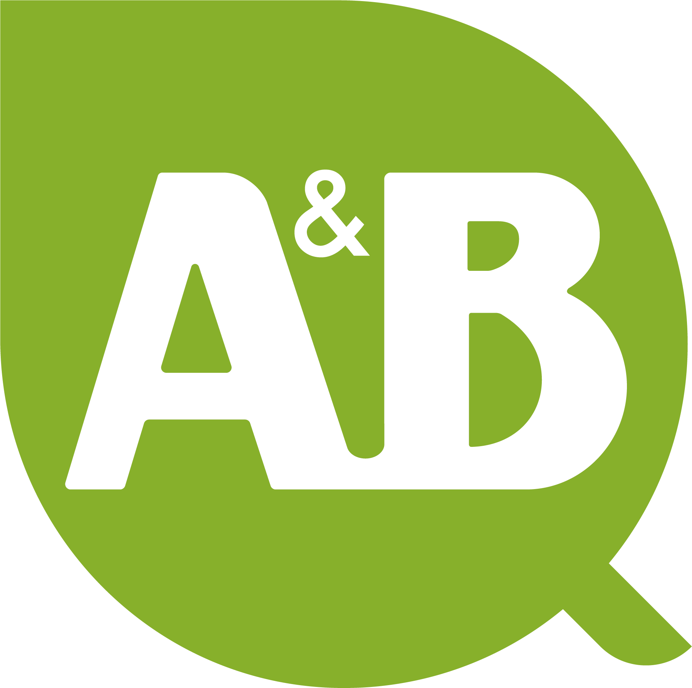

A&B LaboratoriosVeinticinco años de ciencia, personas y propósito.
Desde 2001, hemos construido juntos un modelo de empresa que pone la innovación al servicio de las personas y del planeta. Queremos compartir este hito contigo, quienes sois parte esencial de nuestra historia.
Confirma tu asistencia antes del 10 de octubre de 2026